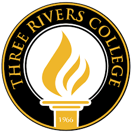
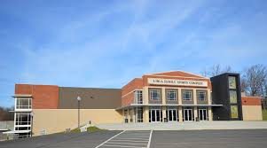

Sales Associate, helping customers, filling orders, and stocking shelves.
As you can see, I've worked there for over four years, making it the largest part of my work history. While I didn't pursue management because I was focused on school, I became a trusted employee in my department. I learned how to stay focused under pressure, provide excellent customer service, and coordinate effectively with coworkers.

Three Rivers College
IT Intern for Three Rivers College
February 2023 - May 2023
I assisted the Technology and Computer Services departments on the campus of Three Rivers College, helping address tickets and fixing day to day issues ranging from simple class problems such as projectors not working properly, and even larger projects such as running ethernet cables and setting up entire networks.
This is my first official position in the field of IT and taught me what is expected of me and what to focus on in my education.

Libla Sports Complex
Three Rivers Event Staff
October 2021 - March 2023
Helped work events held by the college, mainly sports events. This involved cleanup and running media boards. This on its own was a relatively simple job but combining it with the beginning of my college experience it taught me how to manage time and juggling responsibilities evenly, while also just generally building my work ethic and ability to work with others.